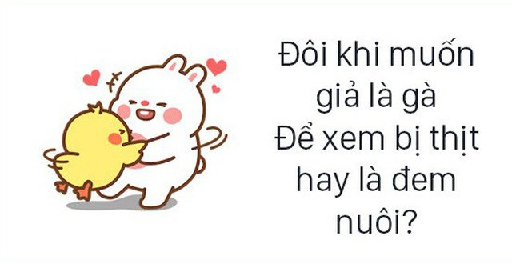
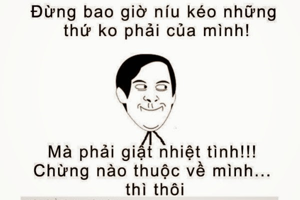
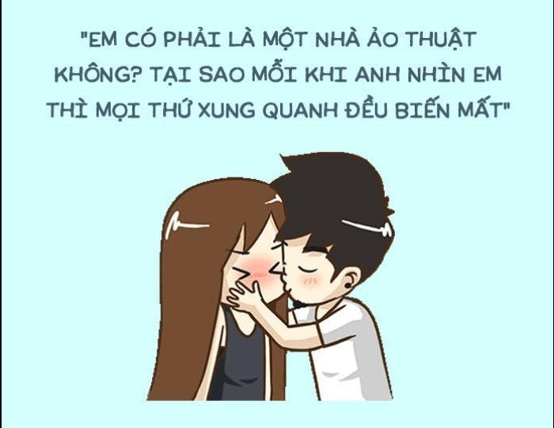
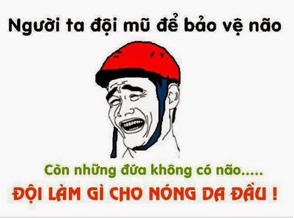
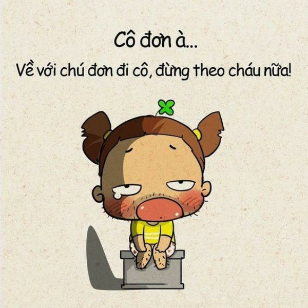
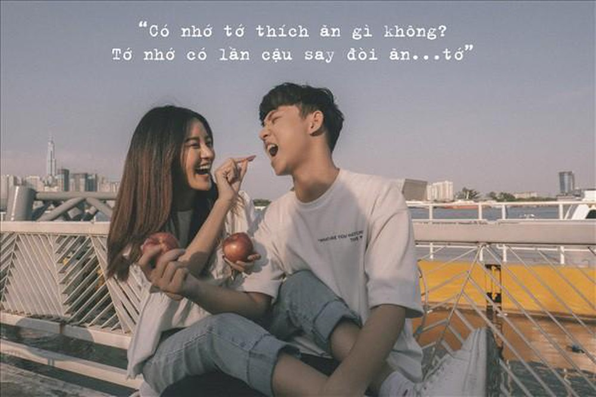
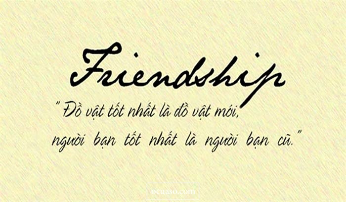

999+ STT vui, CAP hài hước, thả thính vui nhộn về tình yêu, cuộc sống

Ty Nguyen
CEO ❤️ AhaChat. Love babies & chatbot.Nếu bạn đang tìm những stt vui, stt câu like thả thính, những câu nói hài hước, vui nhộn về tình yêu, cuộc sống thì đừng bỏ lỡ bài viết dưới đây. Tuyển tập 999+ stt vui, cap hài hước, thả thính vui nhộn về tình yêu, cuộc sống trong bài viết dưới đây cho bạn tha hồ lựa chọn cap, stt để chia sẻ lên mạng xã hội mỗi ngày, mang đến niềm vui cho mọi người.
Xem thêm:
- 9999+ câu STT hay, CAP - TUS hay bất hủ mọi thời đại được SHARE nhiều nhất
- 999+ STT buồn, CAP tâm trạng, TUS ngắn cực HAY mọi lứa tuổi
- 999+ STT, CAP, TUS thả thính ngắn siêu HAY, ngọt ngào, dễ thương
- Những câu nói hay về tình yêu: STT, CAP, TUS đủ thể loại buồn vui
- 999+ STT hay chất như quả đất, CAP ngầu về tình yêu & cuộc sống
- Những câu nói hay về tình bạn: STT, CAP, TUS buồn vui đủ thể loại
- 9999+ Tên nick Facebook hay, ngầu, đẹp, chất cho Nam & Nữ
- Full 1001+ Icon Facebook 2020 mới nhất & Các biểu biểu tượng FB HOT
STT vui hài hước câu like đang gây sốt hiện nay

Khi bạn đăng ảnh, video lên mạng xã hội kèm theo những stt vui hài hước đang gây sốt hiện nay sẽ giúp bài đăng của bạn trở nên thú vị hơn. Nhờ vậy, những bài viết có kèm stt như vậy thường thu hút được nhiều lượt like.
“Mập thì đẹp. Ốm thì dễ thương. Lòi xương thì dễ mến."
Có công mài sắt có ngày mỏi tay.
Người bạn chân thực luôn luôn là: Khi bạn lầm lỗi, người đó không nghĩ là bạn thường xuyên làm như vậy.
“Bước đến nhà em, bóng xế tà. Đứng chờ năm phút bố em ra. Lơ thơ phía trước vài con chó. Lác đác đằng sau chổi lông gà”
Lương tâm là cái buộc ta phải kể hết mọi bí mật cho người tình trước khi có ai đó mách.
Khi nhìn thấy những cặp tình nhân khắc tên nhau trên cây, tôi luôn tự hỏi: yêu đương thì mang theo dao làm gì.
Học chi cho lắm cũng thành trâu. Trốn học đi chơi đỡ nhức đầu.
Ai cũng tìm một nửa của mình còn thiếu nhưng riêng tôi thì không! Bởi vì tôi không bị đứt đôi người. Tôi quá hoàn hảo.
Khoa học chứng minh: Sau lưng một người đàn ông thành công luôn có bóng dáng của người đàn bà. Ý của họ là: Sau lưng một người đàn ông thất bại là một người đàn bà thật sự.
Hãy đi lên bằng chính đôi chân mình – Nếu thang máy hỏng.
“Trời buồn trời đổ cơn mưa. Em buồn em ngủ từ trưa tới chiều. Ngủ xong dậy ăn cơm chiều. Ăn xong lại ngủ từ chiều tới mai."
Không có người phụ nữ xấu, chỉ có người phụ nữ…không đẹp.
Học không chơi đánh rơi tuổi trẻ. Chơi không học có vẻ vui hơn. Khi không còn yêu, người ta thề sống chết… với nhau.
Con cóc là cậu ông trời. Nghe tiếng cóc gọi được nồi cháo ngon.
Bạn có thể học hỏi từ thất bại của mình … bạn sẽ học được rất nhiều trong ngày hôm nay!!!
Em cũng chỉ là con gái thôi. Buồn là ăn không ăn là buồn.
Yêu nhau thì thề sống chết cùng nhau. Ghét nhau thì thề sống chết với nhau.
Tình yêu sẽ mãi mãi trường tồn, chỉ có người yêu là thay đổi.
Nếu bạn nói với Chúa, bạn đang cầu nguyện. Nếu Chúa nói với bạn, bạn mắc chứng tâm thần phân liệt rồi.
Thú nhận tội lỗi thì tốt cho tâm hồn của bạn, nhưng rất xấu cho nghề nghiệp của bạn
Một ngày cho công việc cực nhọc, một giờ cho thể thao, cả cuộc đời dành cho bạn bè cũng còn quá ngắn ngủi.
Trong một bữa tiệc thường có 2 loại người: muốn về trễ và muốn về sớm.
Bom nguyên tử được phát minh… vì công dụng hủy diệt tất cả các phát minh.
Xăng … có thể cạn, lốp … có thể mòn, nhưng số máy, số khung thì không bao giờ thay đổi.
Có một thứ tiền không thể mua được. Đó là sự nghèo khó!
Mỉm cười thì có bạn, nhăn mặt thì có nếp nhăn.
Độc thân cũng ổn mà. Chẳng cần phải make up cầu kì. Không cần phải khóc lóc vật vã vì cãi nhau. Không cần tìm lũ bạn than phiền nức nở. Không cần phải để ý cảm nhận của đối phương. Không cần lo lắng bà dì đến sớm hay muộn. Không cần phiền não vì mình lại tăng cân. Không cần buồn bã vì gần đây nhan sắc mình đi xuống. Muốn đi đâu chơi thì cứ đi đến khi nào chán thì về, không lo bị gọi điện tra khảo. Không cần tốn tiền đăng kí 3G, đăng kí tin nhắn. Không cần hao tâm tổn sức suy nghĩ xem đối phương có làm gì có lỗi với mình không…. Tóm lại là độc thân thật tốt biết bao.!
Ế là xu thế, nên hãy sống tử tế và tỏa sáng nhé các chế.
Người ta dùng thời gian để kiếm tiền… rồi dùng tiền để đốt thời gian
Nếu có yêu ngay cái nhìn đầu tiên thì bạn sẽ đỡ tốn tiền và thời gian.
Ly dị là sự kiện mà người đàn ông phải giặt đồ cho mình…thay vì trước đó phải giặt đồ cho cả hai.
TỰ KỶ là gì??? Là tự mình sống hết thế kỷ.
Người ta thường nói cười là phương thức tốt nhất để chữa lành mọi tổn thương. Nhưng khi bạn cười mà không có lý do, thì lúc đó bạn cần thuốc.
Nghệ thuật che lấp sự bất tài cũng đòi hỏi không ít tài năng.
Chết vì người phụ nữ bạn yêu thì dễ hơn sống chung với họ.
Ngắn gọn thể hiện sự thông minh nhưng không đúng trong trường hợp người ta nói “Anh yêu em!”
Truyền máu là con đường ngắn nhất đi đến trái tim đối phương.
Cuộc sống vốn ngắn ngủi, vì vậy bạn hãy luôn cười khi còn đủ răng.
CAP vui hài hước về tình yêu

Cap vui hài hước về tình yêu luôn được các bạn trẻ quan tâm và thường xuyên sử dụng kèm những hình ảnh, video hay ho khi đăng lên mạng xã hội.
Giờ mình chơi tung đồng xu nha. Mặt ngửa thì em là của anh. Còn mặt sấp thì anh là của em.
Thanh xuân như một ly trà. Chờ crush thích lại hết bà thanh xuân.
Tình yêu là một giấc mơ dài ngọt ngào, còn kết hôn là một chiếc đồng hồ báo thức!
Dân thường chơi đẹp đè bẹp dân chơi.
Anh cho em mượn điện thoại một xíu được không? Em cần gọi báo cho Chúa là em đã tìm được thiên thần mà ngài lạc mất rồi.
“Nếu giọt nước là những nụ hôn, anh sẽ trao em biển cả. Nếu lá là những ôm ấp vuốt ve, anh sẽ tặng em cả rừng cây."
Cô đơn à, về với chú đơn đi cô, đừng theo cháu nữa.
Anh có tin vào yêu từ cái nhìn đầu tiên không, hay là để em nhờ thần Cupid bắn mũi tên vào anh một lần nữa nhé
Sống là phải biết cho đi! Hãy cho đi tất cả, để rồi nhận ra rằng đòi lại rất khó…
Bắc Đẩu đã có Nam Tào. Còn anh đã có người nào hay chưa?
Thế lúc nào anh phải trở lại thiên đường?
Anh sẽ cho em tất cả cuộc đời này để đổi lại được nhìn em cười, được nắm tay em
Vợ chồng nghĩa nặng tình sâu. Thương nhau đến lúc bạc đầu còn thương.
Hôm nay, anh đã nhìn thấy một thứ gì đó từ cửa sổ của một cửa hiệu. Nó sáng đẹp lấp lánh và cuốn hút. Anh đã muốn mang nó về tặng nhưng, nhưng sau đó anh nhận ra rằng đó chính là hình ảnh phản chiếu của chính mình.
Cá không ăn muối cá ươn. Anh mà dính thính trăm đường anh hư.
“Nếu như có một cô gái sẵn sàng chết vì tôi, bạn biết vì sao không? Nó chứng tỏ cô ấy tha thiết chết còn hơn phải yêu tôi."
Vợ càng yêu chồng càng sửa được nhiều khuyết tật của chàng, Chồng càng yêu vợ càng tăng thêm các tật xấu của nàng.
“Ở bên anh, em bình yên đến lạ. Xa anh, em thấy lạ nhưng cũng khá bình yên."
Em không cần Instagram, vì em đã theo dõi anh rồi.
Buổi trưa anh đói cồn cào. Ship anh một chút ngọt ngào đi em.
Anh thật nóng bỏng, chắc anh chính là nguyên nhân gây nóng lên toàn cầu đấy.
Trời nắng đâu làm tôi cháy. Nhưng mà cười của cậu chắc chắn làm tôi say.
Năm nay em vẫn một mình. Nếu anh cũng thế thì mình yêu thôi.
Tại sao những bà vợ lại nguy hiểm hơn cả trùm Mafia? Họ chỉ cần tiền hoặc mạng sống. Các bà vợ thì muốn cả hai.
Khi anh nhìn vào trong ví, trong đó chẳng còn xu nào, khi anh nhìn vào túi quần, nó cũng rỗng tuếch, và khi anh nhìn vào trái tim mình, anh thấy em, và chỉ lúc đó anh mới nhận ra rằng mình đã giàu.
Yêu nhau thì thề sống chết cùng nhau. Ghét nhau thì thề sống chết với nhau.
Em xin lỗi vì không tặng anh một hộp chocolate ngày Valentine, nhưng nếu anh muốn chút gì đó ngọt ngọt, thì em ở ngay đây nè.
“Anh có biết trong menu ngày Lễ tình nhân có gì không? Em-và-Anh (Chơi chữ: Menu (thực đơn) = Me-n-U = Me and You (Em và Anh))"
Tôi thích được kết hôn. Thật là tuyệt khi bạn tìm thấy một người đặc biệt và làm phiền họ hết cuộc đời của bạn.
Tính em không thích lưng chừng. Yêu em chẳng sợ cắm sừng đâu anh.
Đồ ngọt duy nhất mà anh muốn trong ngày lễ tình nhân là cái bánh ngọt đáng yêu như em đó!
Một vài người bước vào cuộc đời chúng ta và để lại dấu chân của họ trong trái tim chúng ta, nhưng cũng có những người bước vào cuộc đời chúng ta và chúng ta chỉ muốn để lại dấu chân của mình trên mặt họ.
Nếu bạn muốn vợ bạn lắng nghe mình, hãy nói chuyện với người phụ nữ khác; vợ bạn, cô ấy sẽ tự muốn nghe ngóng.
Nhiều cuộc hôn nhân sẽ tốt hơn nếu người chồng và người vợ hiểu rõ ràng rằng họ đang ở cùng một bên.
Bình này để uống trà. Hoa thơm để ngắm. Em là để yêu.
Em dành tiền không mua đồ tết. Mà để đó mua hết trái tim anh.
Tết anh đã có hoa đào, còn em chưa có anh nào rước đi.
Người ta nói bạn không thể sống nếu không có tình yêu, nhưng tôi nghĩ oxy còn quan trọng hơn.
Trái tim em sẽ mở cửa 2 lần. Đón anh vào và tống cổ anh đi
Chào anh, em đang phải làm một khảo sát. Cho em hỏi anh tên gì? Số điện thoại bao nhiêu? Thứ 7 tuần tới anh có rảnh không?
Một người đàn ông kết hôn với một người phụ nữ và hi vọng rằng cô ấy sẽ không bao giờ thay đổi. Một người phụ nữ kết hôn với một người đàn ông lại nghĩ rằng cô ta có thể thay đổi được anh ấy.
Vợ tôi mà ăn diện thì ai nhìn cũng chết. Và khi cô ấy nấu nướng cũng vậy.
Anh có biết chiếc áo của anh may bằng chất liệu gì không? Chất liệu "bạn trai".
Hôn nhân là khi một người đàn ông và người phụ nữ trở thành một và vấn đề bắt đầu nảy sinh khi họ cùng giải quyết một việc.
Mọi đàn ông đều mong muốn lấy một người vợ xinh đẹp, hiểu mình, biết tiết kiệm và biết nấu ăn ngon. Nhưng trớ trêu thay pháp luật chỉ cho họ cưới có một vợ.
Nếu có 2 đôi tất, một đôi hình con thỏ, một đôi hình con cá. Em sẽ là tất thỏ. Con anh là tất cả.
Phụ nữ thường hay lo lắng về tương lai cho đến khi họ lấy chồng. Còn đàn ông thì chẳng bao giờ lo lắng về tương lai cả cho đến khi họ lấy vợ.
Em có thể biến bầu trời thành sắc xanh lá cây, hay em có thể biến cỏ lá thành sắc xanh biển, nhưng em không thể ngăn anh ngừng yêu em!!!
Mỗi khi em nhìn anh, em sẽ thấy nhiều ngôi sao hơn cả trong phim Ngày Lễ Tình Nhân nữa đó.
Tình yêu vốn dĩ chỉ dành cho hai người. Thế mà một số người hình như vẫn không biết đếm.
Trân châu nấu với đường đen. Uống xong cho thiếp làm quen với chàng.
Boyfriend material là cụm từ để chỉ những chàng trai có đủ tố chất làm người yêu lý tưởng.
Muốn dẫn cậu đi paris vì nhận ra tình yêu của cậu và tôi hợp pháp.
Em là biển anh là san hô. Biển thiếu san hô biển vẫn sống. San hô thiếu biển chết khô queo.
Một người đàn ông có bổn phận trước tiên là che chở cho vợ mình.
Chồng giận thì vợ phải lui, Chồng giận, vợ giận thì dùi nó quăng.
Tình yêu giống như không khí mà chúng ta không nhìn thấy nhưng chúng ta luôn biết nó rất cần thiết! Điều đó cũng giống hệt như anh, em sẽ không bao giờ nhìn thấy anh nhưng anh luôn luôn ở cạnh em và em sẽ biết anh mãi luôn yêu em.
Tâm bất thính giữa dòng đời vạn thính.
“Nếu đêm dài là tình yêu, anh muốn gửi em cả trời sao lấp lánh. Nhưng trái tim anh không thể dành tặng em được vì nơi đó đã thuộc về em."
Tôi nghĩ tôi đang bắt đầu có vấn đề về thị lực, bởi vì kể từ khi kết hôn đến giờ tôi không nhìn thấy tiền đâu trong căn nhà của mình.
Thời điểm duy nhất mà vợ tôi lắng nghe tôi là khi tôi nói em có muốn một ít tiền không.
Lý trí em để trong túi quần, nhưng khi gặp anh em lại mặc váy
TUS vui hài thả thính độc bựa chất như nước cất

Nếu bạn đang cảm nắng một người nhưng không biết bày tỏ như nào thì có thể vận dụng những tus thả thính vui hài độc bựa chất như nước cất dưới đây. Những câu thả thính này vừa giống như nói đùa, vừa giống nói thật. Do đó, nếu lỡ có tỏ tình mà bị từ chối thì cũng không quá nghiêm trọng :)
Soái ca là của ngôn tình. Còn anh là của một mình em thôi.
Cậu là sting dâu à? Nếu không sao mỗi lần gặp cậu, xung quanh tớ toàn là bong bóng màu hồng.
Thịt mỡ dưa hành câu đối đỏ. Em đây bé nhỏ chẳng ai yêu.
Nếu anh là một ly đen đắng, em sẽ là sữa trắng ngọt ngào.
Anh có thích nước không? Nếu thích vậy là anh đã thích hơn 70% của em rồi đấy!
Thay vì tặng anh một đóa hồng không héo, để em gửi anh một mối tình không phai!
Bột ngọt thì ngọt nhưng gây ung thư. Còn anh cũng ngọt nhưng gây tương tư.
Không muốn tiến thủ, chỉ muốn anh.
Em yêu bầu trời xanh, yêu cả cánh hoa hồng.Nhưng không quên một thứ, đó chính là yêu anh.
Em sinh ra không phải để sống vất vả. Mà là để sau này được gả cho anh.
Muốn bắt cọp thì phải vào sở thú. Muốn tìm chỗ trú thì phải vào tim em
Thời tiết này yêu em là hợp lý. Anh mà bỏ phí thì là anh ngu.
Thân thiện với môi trường, từ trường với môi anh.
Ngẩng đầu nhìn trăng sáng, cúi đầu... muốn hôn anh.
Làm người yêu tớ đi, tiền mừng tuổi đều cho cậu.
Em đây không thích la cà. Mà em chỉ thích mặn mà với anh.
Tớ nghi ngờ cậu đến gần tớ để hại tớ. Hại tớ thích cậu nhiều đến mức này.
Áo anh màu trắng. Mắt anh màu nâu. Cũng có gì đâu?. Mà làm má em hồng
Anh là Oreo phải không? Vì em nhìn là muốn chấm anh rồi.
Em còn nhỏ, có ba mẹ em nuôi. Lớn lên rồi, anh nhớ em nhé.
Anh ơi rớt đồ kìa anh. Anh chạy nhanh quá đánh rơi em rồi.
Nghe nói gần đây có tin đồn là em rất thích anh. Anh đừng tin, đó không phải tin đồn đâu. Đó là sự thật đấy anh à.
Tớ biết tại sao tớ lại bị cảm nắng rồi. Vì tớ chẳng có chút miễn dịch nào đối với cậu cả.
Em có một siêu năng lực đó là siêu thích anh. Cho dù anh là vàng trắng hay xanh đen, trong mắt em đều chỉ có anh.
Nếu em là trại tâm thần. Thì anh nguyện làm người điên suốt đời.
Mọi người thì thích trà sữa. Còn em thì thích trà trộn vào tim anh.
Hôm nay trời xanh mây trắng.Không say nắng mà say "i love you".
“Em gầy vào mùa hạ, và ốm vào mùa đông. Anh có yêu em không, hả chàng trai trong mộng?"
Họ thích nghe nhạc vì lời. Còn em lại thích trọn đời có anh.
Chẳng cần nghiêng nước nghiêng thành. Chỉ cần nghiêng đủ lòng anh là vừa.
Cậu thích chơi game, tớ chơi với cậu. Cậu thích đá cầu, tớ nhìn cậu. Tớ thích cậu nhiều như thế, cậu thích tớ một tí là chết à?
Sao anh nhìn giống một người họ hàng của em thế? Giống con rể của me em
Cà phê thì đắng, còn ớt thì cay, uống bia tỉnh lắm, gặp anh thì say
Tình yêu của em dành cho anh như iốt vậy, không cần xúc tác nhưng vẫn thăng hoa.
Anh đẹp trai, bổn cô nương vừa bói quẻ cho anh, mệnh của anh khuyết một nửa, nửa đó là em đấy!
Bao năm phê đá phê cần, không bằng một phút ngồi gần bên em.
Ba việc quan trọng nhất của em bây giờ chính là: Em yêu anh, yêu anh, anh.
Anh trú ngụ trong tim em lâu như vậy, thế đã trả tiền trọ phòng chưa?
Xiêu lòng ánh mắt. Xong liều yêu anh.
Cảm lạnh có thể là do gió. Nhưng cảm nắng chắc chắn là do em.
Bệnh nào cũng có thuốc chữa nhưng duy nhất và sẽ không bao giờ có thuốc chữa được bệnh em ngừng yêu anh.
Anh ơi gió lạnh gần kề. Anh mau thu xếp mà về với em.
Em muốn tìm một cuốn sách. Đó là Facebook của anh.
Vì gặp được anh, gần đây em hay trộm 2 thứ. Đó là trộm nhìn, lại trộm cười.
Chim thuộc về rừng, em thuộc về anh.
Muối tan khi khuấy lên trong nước còn em thấy anh là tự tan rồi
Chỉ cho quan phóng hỏa, không cho... anh rời xa em đâu đó.
Em đây không thích la cà. Em đây chỉ thích mặn mà với anh.
Con cóc là cậu ông trời. Còn anh là cả cuộc đời của em.
Anh có rảnh không? Nếu anh rảnh thì hai đứa mình yêu nhau đi cho nó bận, em cũng đang rảnh.
Này cậu ơi, cậu có cận thị không? Sao cậu lại không nhìn thấy trái tim của tớ.
Em thích anh đã hơn hai phút rồi, không thu hồi lại được.
Đừng đuổi theo bus nữa, theo đuổi em đi. Em chạy chậm, còn dễ thương nữa.
Tớ béo thế này, là bởi vì trong lòng tớ còn có cậu nữa
Em sinh ra không phải để sống vất vả. Mà là để sau này được gả cho anh.
Nếu như 2+1 cũng bằng với 1+2, thì có phải anh yêu em cũng đồng nghĩa với em yêu anh đúng không nào?
Chim thường yêu trời, con nít thường yêu kem.Anh thì rất yêu đời, và cũng rất yêu em.
Có một đốm lửa nhỏ. Thắp lên hạnh phúc to.Em đã có ai ngỏ. Hay là để anh lo.
Anh có bằng lòng để tình bạn cách mạng trong sáng của chúng ta thăng hoa thêm một bậc không?
Thức khuya em tỉnh bằng trà, yêu anh em trả bằng tình được không?
Anh dễ thương quá, dễ thương thế chỉ muốn giấu đi không cho ai biết thôi.
STT troll nhau

Những stt troll nhau thường mang đến tiếng cười, xua tan những mệt mỏi lo lắng, bộn bề của cuộc sống. Hãy lưu lại những stt troll nhau dưới đây để có thể chia sẻ với mọi người và mang lại tiếng cười cho nhau nhé.
Đau đầu vì tiền, điên đầu vì tình, đâm đầu vào tường.
Nhà mình nghèo đến nỗi…bột giặt cũng không đủ xài.
Con đường ngắn nhất để đi từ một trái tim đến 1 trái tim là con đường truyền máu.
Càng nhìn, anh càng thấy em giống con gái.
Bia độc hơn rượu , bằng chứng trên thế giới chỉ có ” mộ bia ” mà không có ” mộ rượu “
Tiên học lễ hậu học….ăn.
Khi lòng người giông bão, không có nơi nào gọi là bình yên.
Yêu hoài ốm, ôm hoài yếu.
Một cô gái có tật bẩm sinh là đi tiểu lúc 6h30 sáng không hơn không kém….nhưng vấn đề là cô ta luôn thức dậy vào lúc 7h30……thế đấy !
Nghệ thuật che lấp sự bất tài cũng đòi hỏi không ít tài năng.
Sống là phải cho đi ! Hãy cho đi tất cả những gì bạn có, để rồi hối hận nhận ra rằng đòi lại sẽ rất khó.
Nợ nần biến người ta thành……con nợ !
Luôn luôn nhớ rằng bạn là duy nhất…giống như những người khác
Nếu tình yêu là ánh sáng thì hôn nhân là hoá đơn tiền điện !
Khi tôi chạy, mọi người dõi theo từng bước chạy của tôi. Mạnh mẽ – Tự tin – Thần tốc. Chạy rất lôi cuốn. Lôi cuốn là phải chạy nhanh. Chạy nhanh thì mới thoát chết. Tôi là…Cướp!
Điều tuyệt đối nhất chính là tất cả chỉ là tương đối
Giang hồ hiểm ác anh không sợ…Chỉ sợ đường về vắng bóng em.
Còn….nói còn tát.
Xin bạn hãy dành ra vài giây để đọc hết câu này, đọc đến đây cũng đã hết vài giây rồi, cảm ơn bạn.
Luôn cố gắng khiêm tốn, và hãy lấy làm…tự hào về điều đó
Trăm năm bia đá cũng mòn , bia chai cũng bể , chỉ còn bia…ôm.
Tiền là giấy – Thấy là lấy
Thà sống hèn còn hơn chết dại.
Nếu chồng bị bệnh tiểu đường thì vợ bị bệnh gì ?…….. đó là sún răng !!!
Trai thời nay như vàng lên giá…Gái thời nay như đá lót đường.
Vì tao chắc chắn là trên đời này không có gì là chắc chắn.
Không bao giờ bán đứng bạn bè… khi chưa được giá.
Giá xăng cũng như đồ lót phụ nữ…tụt mạnh xuống sẽ dễ bị…”sốc”.
Ai bảo rằng cây không buồn, không khóc…đá không sầu không nhớ thương ai ? Cây không buồn sao lá vàng rơi rụng. Đá không sầu sao đá phủ rêu xanh.
Người ta có chí thì nên…còn mình có chí thì nên gội đầu.
Đừng bao giờ đua đòi bồ bịch khi mà không ai yêu bạn cả !
Chỉ tay lên trời hận đời vô đối, chỉ tay xuống gối, đi ngủ cho rồi.
Câu nói “không” vẫn là biện pháp tránh thai hiệu quả nhất.
Một người vợ tốt luôn tha thứ cho chồng khi cô ta sai.
Trước khi yêu em, anh đã yêu một người phụ nữ khác…đó là mẹ anh.
Tôi xinh đẹp ? hiển nhiên…tôi thông minh ?…dĩ nhiên…tôi giàu có ?…tất nhiên…tôi học giỏi ?…đương nhiên…
Yêu nhau không phải là nhìn vào nhau mà là cùng nhau nhìn về một hướng… cái xe đang dựng ở gốc cây.
Tôi cao không bằng ai….nhưng được cái nằm xuống thì tôi dài 1m76 !
Nếu bạn bị ăn hiếp hãy nhanh tay gọi cho tôi…Tôi sẽ nhanh chân chạy tới…gọi cảnh sát.
Hồi lớp mầm em yêu con bé hàng xóm học cùng lớp vì hai đứa hay mút kẹo chung và cùng…truồng cởi tắm mưa, nhưng lên lớp lá nó bỏ em vì em…thấp hơn nó.
Khi một cô gái được nhiều người theo đuổi cô ta sẽ làm cao , khi cô ấy được một người theo đuổi thì cô ta sẽ làm dáng , khi không có ai theo đuổi cô ấy cô ta sẽ làm…thơ , và khi cô ta theo đuổi nhiều người cô ta sẽ làm ca …ve.
Đừng tự ti vì mình nghèo mà vẫn giỏi mà hãy tự hỏi tại sao mình giỏi mà mình vẫn nghèo.
Một điều nhịn là chín điều nhục.
Quân với dân như cá với nước ” Nước thì nuôi sống cá còn cá thì ị vào nước.
Tình yêu là bất tử, chỉ có người yêu là thay đổi.
Hài kịch sẽ chuyển sang bi kịch nếu không bán được vé.
Anh bảo anh bỏ rượu…anh bỏ rượu. Em bảo anh bỏ thuốc…anh bỏ thuốc…Em bảo anh bỏ game…anh bỏ em.
Thiếu nữ là chữ viết tắt của….thiếu nữ tính.
Nếu không có học sinh thì tất cả giáo viên đều mất dạy !
Đàn ông không khóc là đàn ông nhút nhát (không dám làm gì (khóc) là nhút nhát rồi).
Người cứu bạn khỏi cảnh sắp hết hơi chưa chắc là 1 bác sĩ, có thể là 1 tay vá xe
Tự hào là hai bàn tay trắng lập nên…vô số nợ.
Có cái nắng, có cái gió nhưng thiếu…cái đó thì ta xa nhau, người ơiiiiiiiiii
Tiền túng – Tình tan – Tư tưởng tồi tàn – Tiến tới tự tử
Rõ ràng là trên đời này không có gì là rõ ràng.
Bạn gái tôi rất xấu nhưng được cái kết cấu nó đẹp.
Bình tĩnh, tự tin, đừng cay cú – Âm thầm, chịu đựng, trả thù sau
Phim sạch là phim trong sáng. Phim sạch là phim mà diễn viên lúc nào cũng ở trạng thái sạch sẽ và được người khác liếm láp cho sạch.
Thất tình tự tử đu dây điện.Điện giật tê tê chết từ từ
Bực mình sinh sự…bụng bự sinh con…
Giang hồ hiểm ác, không bằng mạng lag thất thường.
Đề thi 40 câu, chỉ sai 1 câu còn lại xém đúng.
Hãy cho tôi một điểm tựa, tôi….mỏi lắm rồi.
Bản chất xấu xa nhưng do dòng đời xô đẩy trở thành người lương thiện.
Ly dị là sự kiện mà người đàn ông phải giặt đồ cho mình…thay vì trước đó phải giặt đồ cho cả hai .
Cách tốt nhất để giữ lời hứa là đừng hứa gì cả.
Xin thề: Tôi với anh kết nghĩa anh em , tuy không sinh cùng năm cùng tháng cùng ngày, nhưng nguyện sống cùng ngày cùng tháng cùng năm.
Đi một ngày đàng…mất 10.000 tiền cơm
Đằng sau nụ cười là nước mắt…đằng sau nước mắt là..cá sấu.
Nghèo mà xài sang để sau này có giàu bớt bỡ ngỡ.
Dù gái hay trai….cứ lai rai mà đẻ !
Khổ quá, sướng không chịu nổi
Nếu có ai đó khen bạn : ” bạn có ½ là đẹp , ½ còn lại là tài năng , gộp lại thì vừa đẹp vừa tài năng ”, bạn hãy coi chừng [ ½ đẹp tức là ½ đó không có chút chất xám nào , ½ tài năng , tức là ½ đó không có chút sắc đẹp nào –> hợp lại hoá ra bạn là một con người vừa xấu vừa ngu đó sao?
Để giữ gìn sự trong sáng của tiếng Việt khi tham gia chat, blog, các diễn đàn, SMS… “Mấy bợng đừn diếc xai trính tã nghe”
Cũng như bao định luật bảo toàn khác…đói thì phải ăn (định luật bảo toàn tính mạng).
Khi ai đó nói bạn vô duyên thì bạn nên mỉm cười vì vô duyên là viết tắt của Vô tư và Duyên dáng.
Mập thì đẹp – Ốm thì dễ thương – Lòi xương thì dễ mến.
Ta về ta tắm ao ta dù trong dù đục cũng là cái ao.
Bạn có thể mua một người trung thực không ? Không! nhưng bán một người như vậy dễ hơn .
Trông bạn quen quen, hình như tớ … chưa gặp bao giờ
Ngắn gọn thể hiện sự thông minh nhưng không đúng trong trường hợp người ta nói ” Anh yêu em “
Cần bán gấp nhà 3.000 m2, tường chống đạn, nhiều phòng, an ninh tốt, có camera, công an tuần 24/24. Địa chỉ: Nhà tù bộ công an. Giá thương lượng.
Tuy mình không đẹp…nhưng còn lâu mới xấu.
Dù bạn không đẹp nhưng người khác vẫn mắc ói
Tại sao chỉ có danh hiệu bà mẹ việt nam anh hùng mà không có danh hiệu ông bố việt nam anh hùng nhỉ ?
Trái tim em chỉ 2 lần mở cửa. Đón anh vào và tống cổ anh ra.
Không ít phụ nữ già đi nhanh chóng có khi do họ động não suy nghĩ phải làm sao để mình trẻ lại. Chết cho người phụ nữ mình yêu vẫn dễ hơn là phải sống chung với họ.
Lương tâm là cái buộc ta phải kể hết mọi bí mật cho người tình trước khi có ai đó mách.
Có khi nào trên đường đời tấp nập, ta vô tình vấp phải sấp đô la?
Một thằng ngốc xài máy vi tính nhận được thông báo sau “Cannot found the printer”…thế là hắn xoay cái monitor về phía máy in….thế đấy !
Trăm lời anh nói không bằng làn khói anh còng SH
Con gái cũng như một quyển sách…Đừng mong đọc một ngày là hiểu được.
Khi hắt xì mạnh bạn có thể làm gãy cả xương sườn…nhưng đừng cố nín vì có thể bạn sẽ bị đứt mạch máu đấy.
Thà ngu vì thiếu iot, còn hơn là thiếu iôt mà vẫn ngu.
Định nghĩa mới về vợ : ” học dốt nói ngông , đi chơi lông bông , mồm thì khoác lác , mua sắm nát đời , mà câu nào nói ra cũng lời lời đạo lý
Khi tôi ăn, cả quán dõi theo từng động tác. Tự tin – Gắp nhanh – Phong cách. Tôi thích cơm bụi. Cơm bụi rất lôi cuốn. Lôi cuốn là phải ăn nhanh. Ăn nhanh là sạch sẽ. Tôi là…Sinh viên nghèo!
Thể thao là có hại. Nếu ta sống được thêm 10 năm nhờ luyện tập thì ta cũng mất 15 năm vào các buổi tập luyện đó.
Người ta mất 3s để nói tiếng yêu….mất 3 giờ để giải thích…mất 3 ngày để chấp nhận và mất cả đời để thực hiện và ân hận….!
Vì tương lai con em chúng ta. Đánh chết cha con em chúng nó!!
Học hành như cá kho tiêu, kho nhiều thì mặn học nhiều thì ngu.
Em có biết rằng anh nhớ em nhiều lắm không? Anh ăn không ngon nhưng ngủ như điên, anh đi giày quên đi tất, ăn sáng quên đánh răng, anh dùng xăng vo gạo, anh khờ khạo cũng chỉ vì yêu em đó.
Khi xưa ông cha ta xả thân cứu nước…Ngày nay, chúng ta xả nước cứu thân !!!
Phụ nữ thích mua đồ đẹp để con trai ngắm…Con trai thích ngắm con gái không mặc đồ…Vậy con gái mua sắm làm cái gì ???
Làm con gái phải ngang tàng ngạo nghễ…Sống trên đời phải hống hách kiêu sa.
Cá không ăn muối cá ươn. Con không ăn muối….thiếu iot rồi con ơi.
Một phụ nữ toàn diện là: Sáng diện, trưa diện, chiều diện, tối diện…
Ánh sáng đi trước âm thanh, vì thế, con người ta trông có vẻ thông minh cho đến khi ta nghe họ phát biểu!
Lương tâm là cái gì đó cảm thấy tổn thương trong khi các phần khác của cơ thể cảm thấy dễ chịu.
Hồi xưa mình đẹp trai lắm…Bây giờ đỡ nhiều rồi.
Giới tính của bạn là gì ?…Mình bảo nam, duy vật biện chứng bảo nữ…còn khoa học thì đang chứng minh…
Đàn bà là những niềm đau…Anh em dù biết vẫn theo sau…đàn bà ^.^
Tôi đã nói “không” với ma túy, nhưng tụi nó không chịu nghe.
Xăng có thể cạn, lốp có thể mòn……nhưng số máy và số khung vẫn không đổi !
Em đừng buồn vì những lời bạn anh nói nhé, nó nói em :”Nhìn xa cứ tưởng con người, nhìn gần mới biết đười ươi xổng chuồng”. Anh đau lắm nhưng không sao, bôi cao sẽ khỏi, không khỏi ăn tỏi sẽ hết, không hết cho chết là vừa.
TUS cô đơn hài hước dí dỏm

Hãy lưu lại ngay những câu tus cô đơn hài hước dí dỏm dưới đây vừa giúp bạn thoải mái tư tưởng lại biết đâu tìm được người cùng có sở thích để thoát khỏi cảnh cô đơn :D
Thực tế là: Không có người yêu cũng không NHỤC và BUỒN bằng KHÔNG CÓ TIỀN TIÊU.
Đông này vẫn giống đông xưa Vẫn đi xe máy, vẫn chưa có bồ!
Người ta du lịch có đôi, còn tui lủi thủi đơn côi một mình. Đôi khi tình yêu chỉ là chuyện của một người. Anh cứ sợ rằng…em sẽ chẳng yêu anh, em chờ đợi ai mà nỗi nhớ cứ đong đầy.
Sai lầm của những đứa ế là hay đi tụ tập với những đứa ế còn lại, nên chẳng bao giờ thoát ế!
Ế là một xu thế của quốc tế trong khi nền kinh tế rất chi là lề mề và trì trệ, trong ki lạm phát thì cao hơn điện thế.
Cô đơn, lẻ loi, tâm tư như sóng đánh, chơi vơi mệt mỏi tâm hồn thì mong manh.
Tự dưng thấy nhớ anh người yêu quá… Không biết ảnh đã ăn cơm chưa, có mặc đủ ấm không, có nói dối, thức khuya, chơi game không nữa… Mà không biết anh ấy tên gì, nhà ở đâu, bố mẹ làm gì nhỉ!!! 8. Xinh là một LỢI THẾ, ế là một KỸ NĂNG. Mình không có LỢI THẾ, nhưng bù lại được cái KỸ NĂNG.
Ế cũng cần phải có trí tuệ, để khi bạn bè trêu mình ế, mình cũng đủ sức chống chế: “ anh đây ế vì quá tử tế.
Tình yêu không tới đành vờ không biết, nếu không biết thì sẽ không đau…
Hãy trở thành một người con gái quyến rũ để tất cả các chàng trai đều muốn có chứ không phải yếu đuối luôn dựa dẫm vào các chàng trai
Đừng nghĩ ai sẽ mất ai, vì chúng ta không sở hữu ai cả.
Ế là vì chúng ta biết kiềm chế không chạy theo xu thế. Chỉ cưới khi ổn định kinh tế, lúc đó tha hồ đẻ con mà bế.
Khi bạn chẳng có ai để thích cuộc sống sẽ nhẹ nhàng và thoải mái hơn nhiều, chỉ là có hơi cô đơn một chút.
Vào năm 18 tuổi tình yêu không có chuyện đúng sai. Nhưng vào năm 25 tuổi bạn nên bắt đầu tin rằng tình yêu mang đến những người đúng và sai cho cuộc đời bạn.
Tự dưng thấy nhớ anh người yêu quá. Không biết anh đã ăn cơm chưa, có mặc ấm không? Mà không biết anh tên gì nhà ở đâu bố mẹ làm gì nhỉ?
Nhiều lúc muốn yêu… nhưng kiêu không thèm nói.
Cuộc sống độc thân luôn tự do nhất, bạn có thể đi bất cứ đâu, gặp bất cứ ai mà không sợ mất lòng người khác.
Nhiêu lúc người ta cô đơn không phải vì không có ai ở bên cạnh mà vì trong lòng không có ai để hướng về.
Ế là một lợi thế để chúng ta bàn mưu tính kế, xoay chuyển tình thế, quản lý tiền tệ… Rồi 1 ngày kinh tế sẽ đủ sức khống chế tình yêu.
Mỗi con đường đều chất chứa sự cô độc. Dần dần bạn sẽ tin rằng không có gì là không thể tha thứ, không có ai vĩnh viễn bên cạnh mình. Có lẽ hiện tại bạn đang rất mệt mỏi, con đường phía trước vẫn còn rất dài, đừng quên lý do tại sao bạn đặt chân lên con đường ấy,đừng quên điều gì khiến bạn kiên trì đến tận hôm nay, cũng đừng quên tâm niệm thuở ban đầu. Nếu đánh mất chính mình chỉ có thể từng chút từng chút tìm đường quay lại, khiến bản thân trở nên ưu tú khiến người yêu thương bạn có thể tự hào.
Trên đời luôn luôn có một người như vậy, bạn sợ sẽ vĩnh viễn không gặp lại người đó nhưng lại sợ gặp người đó lần nữa.
Làm mẹ đơn thân vì dại khờ nông nổi trong tình yêu vẫn đáng quý hơn nhiều so với những người mẹ mải mê tìm kiếm hạnh phúc mà bỏ rơi con mình.
Con gái quyến rủ nhất khi họ không thuộc về ai.
Đừng nhầm lẫn độc thân với cô đơn vì có những người độc thân nhưng chẳng cô đơn chút nào.
Đi ăn cưới rất nhiều nhưng không biết bao giờ mới thu hồi vốn.
Từ trước đến giờ công chúa cũng có đấy chứ, nhưng công chúa là dành cho hoàng tử, nếu không phải là hoàng tử thì đừng mơ mộng nữa.
Không có nợ thì đừng có yêu, muốn cao siêu thì đừng dại gái, muốn thoải mái thì cứ FA…..
Nỗi khổ của FA không phải không có người yêu mà là đẹp quá nên người ta cứ tưởng có người yêu rồi.
Ế là phong cách sống của người tinh tế và các bậc vai vế, chỉ thích ngồi trên ghế, nhâm nhi cà phê, chơi đế chế hoặc nghịch dế.
Thực tế là không có người yêu vẫn không nhục bằng không có tiền tiêu.
Độc thân không đáng sợ đáng sợ là đang yêu mà vẫn có cảm giác một mình.
Mảnh ghép có hình thù đơn giản càng ghép thì càng khó thành hình.
Tôi lạc quan giữa đám đông, nhưng khi một mình thì lại không. Cố tỏ ra là mình ổn nhưng bên trong nước mắt là biển rộng.
Đâu có nỗi trống trải nào cho bằng khi vừa thức dậy. Đâu gì có thể lấp đầy bằng một nụ hôn.
Kiếp FA thật đỡ phiền khôn vợ không tiền thật bình yên.
Độc thân không có nghĩa là bạn đang yếu đuối.
Đừng trách ai đó làm cho bạn thất vọng hãy trách bản thân đã kỳ vọng quá nhiều.
Con gái hiện đại là chẳng ngại FA
Nỗi đau khổ của người khác giống như một hồ nước nhỏ. Nhìn thấy, biết đó, mà chẳng rõ nông sâu. Người trong đó chịu dày vò như thế nào? Vốn dĩ chẳng ai biết được…
Nhìn lũ bạn có bồ mà tao tuổi thân vl ra … T_T … Ông trời ơi, khi nào con mới có bồ???!!!
Nếu không lấy chồng thì tui về làm con ngoan của bố mẹ thôi. Sao phải xoắn…
Chúng ta ít khi đau lòng bởi sự thật nhưng lại tổn thương bởi những lời nói.
Thật ra năm tháng không làm chúng ta trưởng thành điều làm chúng ta trưởng thành đó là từ những sai lầm.
Nói thật … tôi thà cô đơn cả đời chứ không cần thứ tình cảm nửa vời. Vậy nên đã không là tất cả thì tốt nhất sẽ không là gì cả. Bạn chẳng cần phải miễn cưỡng quan tâm tôi và lôi tôi vào trò chơi tình cảm giả dối
Kiên nhẫn, đừng sồn sồn lên. Cái gì cũng cần có thời gian. Trước tiên hãy đẹp và độc (thân) đã!
Đừng buồn vì Noel này không có gấu vì bình thường bạn cũng có gấu bao giờ đầu.
Một cô gái thông minh sẽ lựa chọn cuộc sống độc thân thay vì bị lừa dối, phản bội và bị đối xử một cách vô tâm.
Xuân này vẫn giống xuân xưa, vẫn đi dép nhựa vẫn chưa có bồ. Tết này vẫn giống tết xưa, vẫn đi xe số vẫn thừa ghế sau…
Độc thân không có nghĩa là em không tốt, mà là do anh không đủ tốt để có em thôi.
Kiếp FA thật đỡ phiền, không vợ, không tiền – thật bình yên.
Tôi không có Ế!!! Mà là sống vì bạn bè nên hạn chế người yêu!
Độc thân không phải là ế mà là đang chờ người tử tế để yêu.
Xinh là một lợi thế. Ế là một kĩ năng. Mình không có cái lợi thế nhưng bù được cái kĩ năng.
Thời điểm đó anh một mình, em một mình, chúng mình vô tình va phải nhau thế là đi chung một đoạn.
Độc thân không có nghĩa là không tốt mà là do anh không đủ tốt để có em thôi.
Tui ế vì mẹ tui bảo: “Sau này có ế về nhà mẹ nuôi”
Cô đơn là gì? Đơn giản đó là vợ của chú đơn.
CAP ngôn tình hài hước

Dưới đây là những câu nói ngôn tình hài hước nhưng vẫn chất chứa bao nhiêu điều ý nghĩa, tham khảo để chọn lựa được cap gửi đến những người thân yêu.
Được tất cả mà phải mất đi một vài thứ, cũng chẳng có gì đáng tiếc. Đánh mất anh, cũng mất luôn dũng khí đối mặt với cô đơn…
Anh biết rõ em là hoa hồng có gai vẫn muốn đem đặt trong tim, dẫu có những lúc tim bị đâm đến rỉ máu, vẫn luyến tiếc không muốn buông ra…
Tình yêu đến rồi đi nhưng bệnh tật, con cái và nợ lần sẽ ở lại…
Yêu làm cho chúng ta mài bớt những góc cạnh non nớt, vượt qua biển người cuồn cuộn, ôm nhau bằng tình yêu dịu dàng nhất, nóng bỏng nhất. Tôi biết trên thế giới này mọi thứ đều dễ dàng thay đổi, nhưng nói thật, người trước mặt tôi đây, anh ấy khiến tôi tin vào vĩnh cửu.
“Đã online là phải avai Ước gì anh biến thành dưa Để khi tự sướng em đưa anh vào."
Nhiều khi, một người lựa chọn ra đi, không phải vì dục vọng, cũng không phải vì bị quyến rũ. Chỉ đơn giản bởi nghe thấy tiếng lòng của mình. Để tôn trọng cuộc sống âm thanh trong nội tâm chính mình, chúng ta từng phải trả những cái giá quá lớn.
“Ở bên anh, em bình yên đến lạ Xa anh, em thấy lạ nhưng cũng khá bình yên."
Hút thuốc không phải là ngầu, hút thuốc là để đi cầu đỡ hôi.
Thế giới rộng lớn như vậy, người quen bên mình, thực sự là ít. Ít đến ly kỳ. Không biết những người khác sống thế nào. Có lẽ cũng giống nhau. Một mình ra quán ăn cơm. Đi qua biển người mênh mông, lại tìm không ra người nói chuyện.
Nếu một người đàn ông chìa tay ra cho tôi. Nếu ngón tay của anh ấy ấm áp. Thì việc anh ấy là ai thực ra đối với tôi đã không còn quan trọng nữa.
“Ế khỏe ế đẹp ế văn minh Ai chê anh ế anh khinh cả phường Ế cao ế quý ế dễ thương Ai chê anh ế anh tương vỡ mồm."
Thế giới này rộng lớn là thế, đi đến cùng trời cuối đất cũng không gặp được anh. Nhưng thế giới này cũng thật nhỏ bé, gặp ai cũng thấy giống anh.
Tình yêu như bông hồng thủy tinh, rực rỡ lung linh nhưng mong manh dễ vỡ. Vì dễ vỡ nên đa số người ta thường trang bị thật nhiều…để lỡ vỡ còn có cái mà thay
Em đừng cho rằng anh đợi em, là do anh chưa gặp được một người tốt thôi – nếu thật sự gặp được, làm gì có chuyện anh đợi em. Nhưng Vưu Giai Kỳ, nhiều năm nay anh tìm mãi, vẫn không thể tìm được người thứ hai như em.
"Lúc bé cứ nghĩ cởi truồng là đi tắm Lớn lên mới biết không chỉ đi tắm mới cởi truồng"
STT vui bằng tiếng Anh

Những câu nói, stt vui bằng tiếng Anh dưới đây sẽ góp phần như một luồng gió mới, thu hút được nhiều lượt like và chia sẻ trên trang cá nhân của bạn
1..
"A warm smile is the universal language of kindness.
Một nụ cười ấm áp là ngôn ngữ toàn cầu tượng trưng cho lòng tốt."
2..
"Wear a smile and have friends; wear a scowl and have wrinkles.
Cười có thêm bạn, cau có thêm nếp nhăn."
3..
"I love the man that can smile in trouble, who can gather strength from distress, and grow brave by reflection.
Tôi yêu những người có thể cười khi gặp khó khăn, mạnh mẽ lúc phiền muộn và dũng cảm trước những lời chê trách."
4..
"Use your smile to change the world; don't let the world change your smile.
Hãy để nụ cười của bạn thay đổi thế giới, đừng để thế giới thay đổi nụ cười của bạn.”
5..
"Don't cry for a man who's left you; the next one may fall for your smile.
Đừng khóc vì người đàn ông đã rời bỏ bạn, bởi biết đâu người tiếp theo sẽ phải lòng nụ cười của bạn."
6..
"Wrinkles should merely indicate where smiles have been.
Nếp nhăn chỉ nên để cho người ta thấy những nụ cười đã từng ở đó."
7..
"Don't cry because it's over, smile because it happened.
Đừng khóc vì điều gì đó đã kết thúc, hãy cười vì nó đã đến"
8..
"Sometimes your joy is the source of your smile, but sometimes your smile can be the source of your joy.
Có lúc, niềm vui khiến bạn mỉm cười, nhưng cũng có khi, mỉm cười lại chính là niềm vui."
Bài viết trên đây đã tổng hợp những câu nói hài hước, vui nhộn, những stt câu like, thả thính, troll bựa và cả những stt bằng tiếng Anh cực chất cho bạn tham khảo. Hy vọng với những nội dung đó đã giúp bạn thu hút được nhiều lượt like, nhiều lượt tương tác trên trang cá nhân của bạn hơn mỗi khi chia sẻ. Qua đó, cũng phần nào tạo được niềm vui dành cho bạn bè của bạn khi đọc được những stt mà bạn chia sẻ.